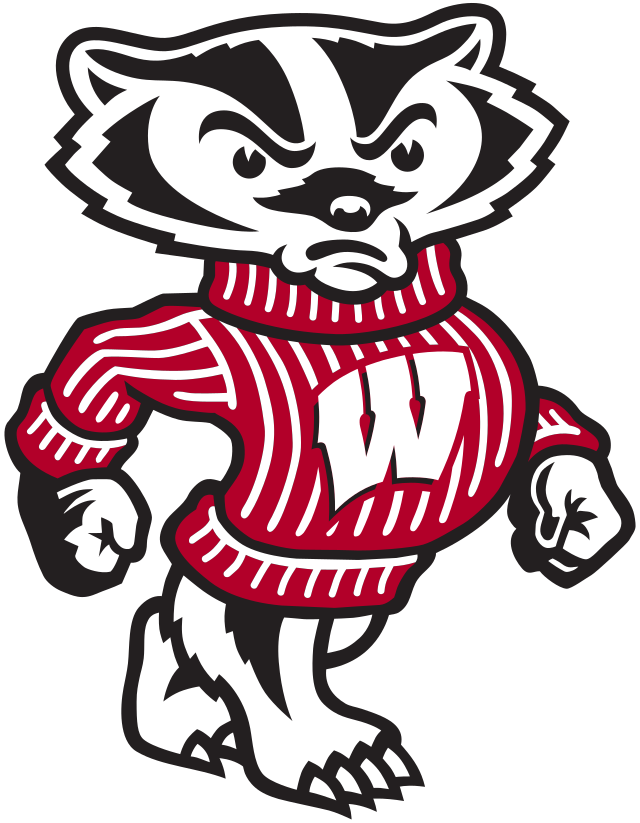

David is a senior studying Computer Science. He originally grew up in West Dundee, which is a very small town in Northern Illinois. He is fascinated by learning new ways to apply knowledge in the realm of Computer Science and has done two summer internships at different companies. However, he has taken many technical classes and is interested to learn about the more social side of his industry! He hopes that by taking this class he will have a better understanding of social issues in tech. He loves to read (his favorite book series is Stormlight Archive) and cook, and he recently has been training for his first marathon! It is in Milwaukee: Marathon Information Here
Cy is a junior studying Information Science. He originally grew up in Minneapolis right next to the University of Minnesota. He enjoys doing fun activities and exploring the city of Minnesota. Here are some: Fun places to see in Minnesota He decided to take LIS 500 because he had an interest in the less technical side of Computer Science. He is fascinated by having discussions with classmates about unique and interesting topics around the world. He thinks that this class will be valuable to learn from multiple perspectives and gain a deeper understanding of the people that he is working with.
